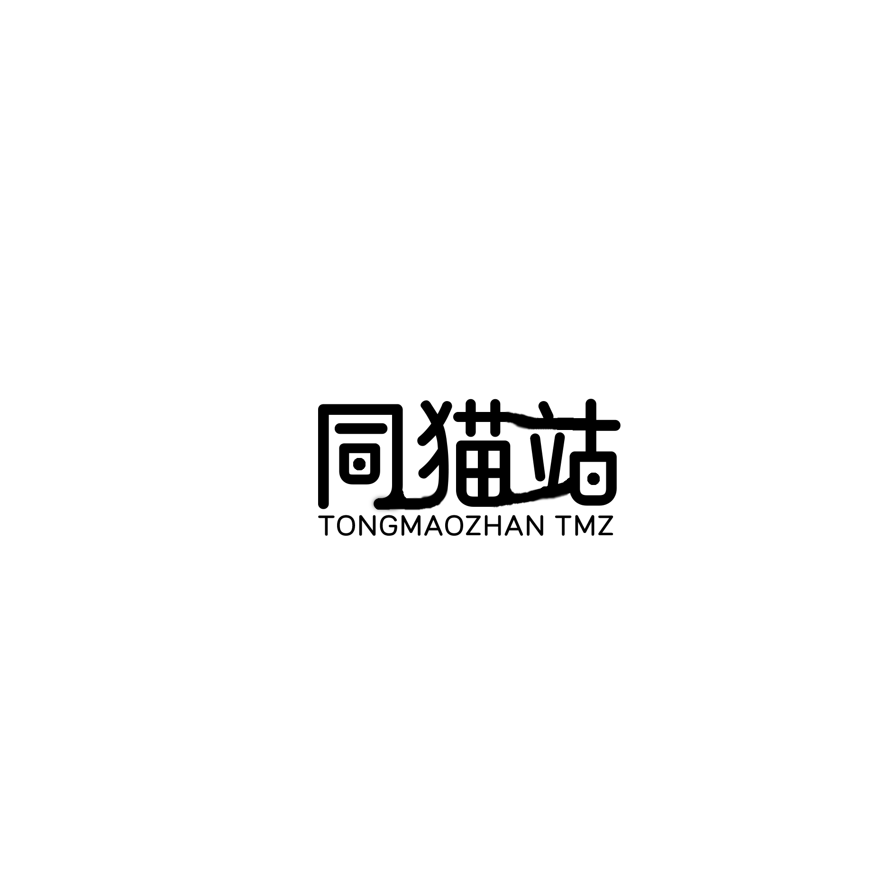

Role (This is to preserve the Chinese language without affecting its original meaning)
白糖，身份做宗京剧猫，几个月的小猫崽立志拯救猫土。
小青，身份身宗宫主，猫土大战时被宗主为保护而托给金婆婆。
武崧，身份打宗京剧猫，总因为自己的太自信而失去东西。
明月，身份云忧谷弟子，拥有云忧谷的多重韵力。
大飞，身份唱宗京剧猫，温暖的大哥哥，星罗班年龄最大的。
News
Jing-Ju Cat launches character cards!

Gift image